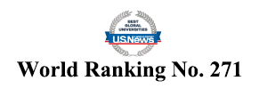
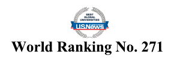

2024 Keynote Speakers


2022 Keynote Speakers


He is elected as: Academician for European Academy of Sciences and Arts (AEASA, EU), an honor reserved for the world's most outstanding scholars; Fellow (Life) of the American Society of Mechanical Engineers (FASME, USA); Fellow of Institute of Engineering and Technology (FIET, United Kingdom); Fellow of International Engineering and Technology Institute (FIETI, Hong Kong), Distinguished Fellow for Institute of Data Science and Artificial Intelligence, (DFIDSAI, China), and, Academician for Academy of Pedagogy and Learning, (USA).
He published > 542 papers in SCI-IF int. journal (430); int. conf. proceedings (130), textbook chapters (>105) and others (32) over the 28 years. Co-edited 14 books on "Cardiac Pumping and Perfusion Engineering" by WSP (2007); "Imaging and Modelling of Human Eye” by Artech (2008); "Distributed Diagnosis and Home Healthcare, v.1” by ASP (2009); "Performance Evaluation in Breast Imaging, Tumor Detection & Analysis” by ASP (2010); "Distributed Diagnosis and Home Healthcare, v.3” by ASP (2011); "Computational Analysis of Human eye with Applications” by WSP (2011); "Human Eye Imaging and Modeling” by CRC (2011); "Multimodality Breast Imaging” by SPIE (2013); "Image Analysis and Modeling in Ophthalmology”; "Ophthalmology Imaging and Applications” by CRC (2013, 2014); "Bio-inspired Surfaces and Applications” by WSP (2016); "Application of Infrared to Biomedical Sciences” by Springer (2017) and "Computation and Mathematical Methods in Cardiovascular Physiology” by WSP (2019). Also, co-authored a text book: "Compressor Instability with Integral Methods” by Springer (2007).
He is in the Stanford list of the World's top 2% Scientists since 2019 (ranked 83 out of 64,425 as top 0.001% in the field of Biomedical Engineering, 2020) (See website). The ranking method is calculated by removing the self-citation of the literature. Ranked # 7 (Worldwide) in Google Scholar under Biomedical, cited by 14400 (h-index: 62) (See website). His Scores in researchgate.net is also one of the highest within the schools and is higher than 98% of all ResearchGate members' scores (See website).
More details like the latest H-index, SCI-total citations are available in http://www.researcherid.com/rid/A-1375-2011 & http://scholar.google.com.sg/citations?user=9QW1LYAAAAAJ.
 

He is a Professor and Doctoral Supervisor of Shenzhen University, and an External Doctoral Supervisor of the Hong Kong Polytechnic University and the University of Macau. He received his Doctoral degree from the Chinese Academy of Sciences, and later became a postdoctoral fellow at the Chinese Academy of Sciences and the Hong Kong Polytechnic University. He spent several years as a visiting scholar at the University of Edinburgh (UK), Arizona State University (USA), and Victoria University of Wellington (New Zealand). He is now the Associate Dean of College of Management and Institution of Hospital Management, and the Head of Doctoral programs in Management Science and Engineering (first-level discipline) at Shenzhen University.
He has been committed to multi-disciplinary research in Artificial Intelligence, Big Data Analysis and Processing, Information System and Information Management, Operation Research and Optimization, Logistics and Supply Chain Management, Smart Medical Care, and other fields for a long time. He hosted 6 national-level projects funded by the National Natural Science Foundation of China (1 co-hosted), 5 provincial-level projects (1 Major Project funded by the Department of Education of Guangdong Province, 1 Special Project in Key Fields of Universities in Guangdong Province, and 3 projects funded by the Natural Science Foundation of Guangdong Province), 2 projects funded by China Postdoctoral Science Foundation (1 specially-funded), and 10+ other provincial- & municipal-level projects. He published 200+ relevant academic papers, including 79 SCI/SSCI papers (3 ESI Hot Papers, Highly Cited Papers), 99 EI papers, 9 monographs, and 9 patents and software copyrights.
In recent years, he is honored to be selected into many academic honor lists, such as “Hong Kong Scholars” jointly by the National Postdoctoral Administrative Committee Office and the Society of Hong Kong Scholars and “Thousand-Hundred-Ten Talent Project” by Guangdong Province in 2012, “High-level Professionals” by Shenzhen in 2013, “Peacock Plan for Overseas High-level Talents” by Shenzhen in 2014, “Outstanding Young Teachers” by Guangdong Province in 2015, “Pearl River Scholars” by Guangdong Province in 2016, “Member of the Teaching Steering Committee for Higher Education in Industrial Engineering Discipline” by Ministry of Education in 2018, “Excellent Teachers of Southern Guangdong” by Guangdong Province and “Leaders in Innovation Fellowships” jointly by the Chinese Academy of Engineering (China) and the Royal Academy of Engineering (UK) in 2021, and “World Ranking Top 2% Scientists” by Stanford University for three consecutive years from 2020 to 2022. He has won 20 academic awards, including the Best Paper Award of International Conference on Swarm Intelligence (ICSI), the Best Paper Award of International Conference on Intelligent Computing (ICIC), and the Excellent Paper Award of Chinese Academy of Management Annual Conference, and have coached students to win 2 Silver Awards on “Internet+” National Competition.
In the past five years, he has supervised 10 Postdoctoral Fellows (5 have completed their projects), 10 Doctoral students (3 have graduated, 5 Foreign students), and 8 Master students (5 for PhD overseas with full scholarships or China Scholarship Council Grants, 2 for PhD in China after graduation).
2020 Keynote Speakers

2018 Keynote Speakers